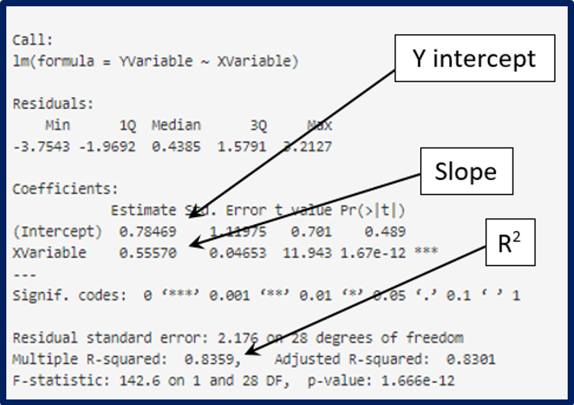

After you select Randomized Play, you will be able to:
1C: Exploring Example Data
Before we analyze the data your class has collected, we will look at an example dataset from someone that already completed this activity. To begin, set Greenhouse App1 to Settings A (at left) and then complete the Creating Graphs questions below.
Settings A
Settings B
Figure 3: Interpreting the Output
Whenever you select a model in the application on the right, you will also see statistical output. In the output, you can find key summary statistics related to the model you have selected.
Instructors Note: Go to faculty resources to access student data
1D: Greenhouse Challenge 1: Who can earn the most profits? 
Develop a strategy to optimize your profit when growing corn in Level 1 of the Greenhouse game. Use your statistical knowledge and any analyses you choose to address the following steps:
- 1. Provide a graph and briefly explain how the graph helps you determine the amount of water that would give you the highest profits
- 2. Play one season of the Greenhouse game again, implementing your strategy:
-
a) Provide the same Player ID
b) Add a “c” at the end of your Group ID. For example, if your Group ID was Stat101S22, now use Stat101S22c
c) Select Level 1
d) Select only the corn crop.
e) Choose any amounts of water and any number of plots.
After playing one season, submit your Player ID, Income, Expenses, and Profits to your instructor. Compare your profits with those of your fellow students by entering your new Group ID below. Sometimes it can take up to 60 minutes for your class data to show in the app below.
1E: Get Curious 
Evaluating a linear model: Use Settings A in Greenhouse App1
- 3. Based on the linear model created in App 1 to address the following questions:
-
a) Notice that the yields vary, even when the same amount of water is used. Explain why this should be expected.
b) Modify the X Axis Limits. When is a linear model a good fit for this data? When is a linear model a poor fit for this data? Briefly explain how you distinguish a good fit from a poor fit.
c) If modifying the range of the data improves the linear model, would it be appropriate to remove some of our data? Why or why not?
Evaluating class data: Use Settings B in the Greenhouse App1
- 4. Sometimes it can take up to 60 minutes for your class data to show in Greenhouse App1. After your instructor confirms enough class data is available, answer the following questions.
-
a) What is the explanatory variable and response variable for this data?
b) What are the units (what does each point represent)?
c) Does it look as though all the players followed the instructions in Step 1B? Explain why or why not.
d) Do the results from your class agree with the sample1 data? Explain why or why not.
e) Try some different statistical models. Which one looks like it best describes the data?
f) What conclusions can you draw from this data and the corresponding regression model?
- 5. Address the following questions about different ways we could have conducted this study to improve the quality of our data:
-
a) Are there better variables to use? For example, what would be the benefits to using Profit or Revenue as the response variable instead of Yield?
b) What are the benefits to randomizing the amount of water assigned to each plot?
c) How many plots would need to be tested to convince you that there is a relationship between Water and Yield?
- 6. In order to create a meaningful regression model, we should take into account possible confounding variables [variables that the researcher did not include in the study but that might be connected to both the explanatory (independent) variable and the response (dependent) variable]. List at least two potential confounding variables that might get in the way of determining the relationship between Water and Yield.
- 7. Go back to the Greenhouse App1, use Group ID = sample1 and Y Variable = Profit, then create a linear model.
-
a) Explain why the linear model does not work as well for profit as it did for yield.
b) Based on this graph, what amount(s) of water should be used to get the most yield?
c) Create a graph and write a paragraph clearly explaining to a farmer the best strategy to maximize corn profits in one season.
Dataspace is supported by the Grinnell College Innovation Fund and was developed by Grinnell College faculty and students. Partial support provided by the Transforming Undergraduate Education in Science (TUES) program at the National Science Foundation under DUE#0510392, DUE #1043814, and DUE #1712475. Copyright © 2021. All rights reserved
This page was last updated on 5 August 2022.